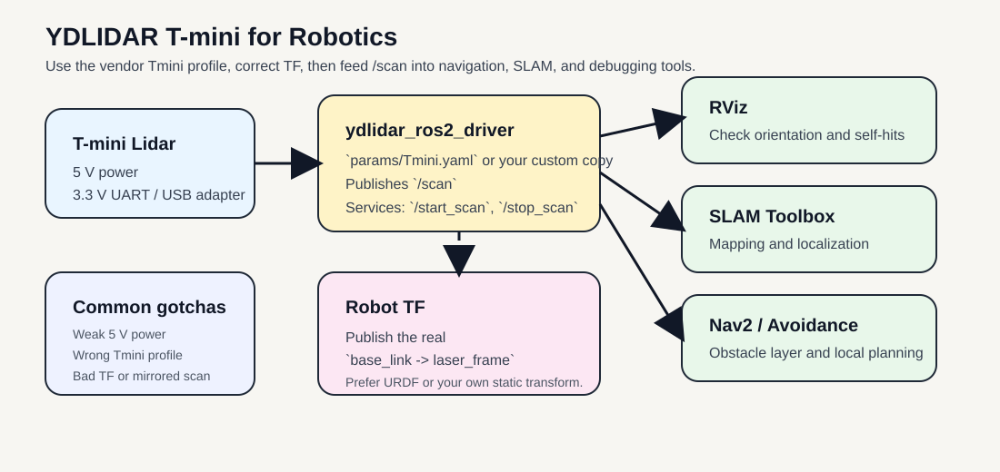
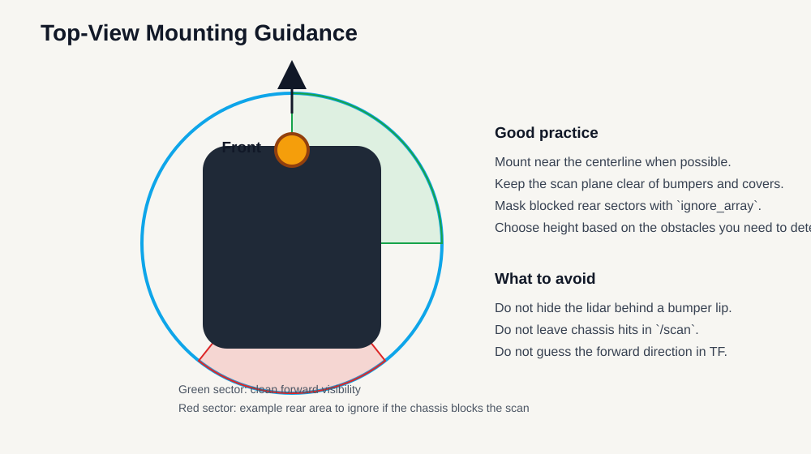

YDLIDAR T-mini for Robotics¶
Use this guide to deploy the YDLIDAR T-mini family in ROS 2 with stable bring-up, correct TF, and practical tuning for real robots.
The goal is not just to publish /scan, but to run the lidar correctly on a robot: proper mount height, right parameter profile, correct frame alignment, and realistic sensing expectations.
This page targets the current Tmini ROS 2 profile used by YDLIDAR for Tmini Pro and Tmini Plus. The hardware numbers below use the current public T-mini Plus product page and datasheet because those are the public references that are easy to verify.
Quick Start¶
Build and source your workspace, then launch the driver with a robot-specific profile:
source ~/ydlidar_ros2_ws/install/setup.bash
ros2 run ydlidar_ros2_driver ydlidar_ros2_driver_node \
--ros-args --params-file ~/ydlidar_ros2_ws/src/ydlidar_ros2_driver/params/Tmini_robot.yaml
Publish your real robot transform:
source ~/ydlidar_ros2_ws/install/setup.bash
ros2 run tf2_ros static_transform_publisher \
0.0 0.0 0.12 0 0 0 1 base_link laser_frame
Run first checks:
ros2 topic echo /scan --once
ros2 topic hz /scan
ros2 service list | rg scan
Expected result:
/scanpublishes at a stable rate- RViz shows stable scan geometry
- TF includes
base_link -> laser_frame
Tip
Start with frequency: 10.0 and the official Tmini.yaml-based profile, then tune only after TF and power are confirmed stable.
Prerequisites¶
| Item | Requirement |
|---|---|
| ROS 2 workspace | ydlidar_ros2_driver and YDLidar-SDK built |
| Device access | lidar serial device available (/dev/ttyUSB* or /dev/ydlidar) |
| Power quality | stable 5 V supply with enough startup current |
| Frame setup | known mount geometry from base_link to laser_frame |
Architecture¶

Practical robot integration path: use the official Tmini.yaml profile, publish a correct base_link -> laser_frame transform, then feed /scan into RViz, SLAM, or navigation.
Official References¶
- YDLIDAR T-mini Plus product page
- YDLIDAR T-mini Plus datasheet (PDF)
- YDLIDAR T-mini Plus user manual (PDF)
- YDLIDAR ROS 2 driver
- YDLIDAR SDK
Capabilities and Limits¶
The YDLIDAR T-mini is a compact 360-degree 2D lidar for short-to-medium range robot perception. It is a strong fit for:
- Indoor mobile robots
- Education and ROS training
- Basic 2D SLAM
- Obstacle detection in one scan plane
- Docking and local navigation
- Small robots where size, weight, and power matter
It is not the right tool for every sensing problem. The main constraints are:
- It is a single 2D scan plane, not a 3D sensor
- It only sees obstacles that intersect its scan height
- A
6 to 12 Hzscan rate is fine for small robots, but not ideal for aggressive high-speed motion - Glass, transparent surfaces, table overhangs, and hanging obstacles still need other sensing
- Stable
5 Vpower matters more than many people expect on SBC-based robots
If your robot must detect overhanging obstacles, open drawers, table edges above the lidar plane, or drop-offs below the plane, you need additional sensors such as bumpers, cliff sensors, or a depth camera.
Key Hardware Facts¶
The following values come from the current YDLIDAR T-mini Plus product page, datasheet, SDK dataset, and ROS 2 driver Tmini.yaml profile:
| Item | Value |
|---|---|
| Coverage | 360 degrees |
| Ranging frequency | 4000 Hz |
| Scan frequency | 6 to 12 Hz, default 6 Hz in datasheet |
| Practical ROS 2 frequency setting | 10.0 in Tmini.yaml |
| Range | 0.05 m to 12 m at 80% reflectivity |
| Dark target range | 0.05 m to 4 m at 10% reflectivity |
| Angle resolution | 0.54 degrees |
| Systematic error | +/- 20 mm |
| Interface | 3.3 V UART, 230400 bps, GH1.25-4P |
| Supply voltage | 4.8 V to 5.2 V, recommend 5 V 1 A |
| Start-up current | typical 840 mA, max 1000 mA |
| Working current | typical 340 mA, max 480 mA |
| Lighting reference | up to 60000 Lux |
| Operating temperature | -10 C to 45 C |
| Dimensions | 38.6 x 38.6 x 33.9 mm |
| Weight | 45 g |
| ROS 2 driver profile | params/Tmini.yaml |
| ROS 2 intensity setting | intensity: true, intensity_bit: 8 |
What these numbers mean for robot design¶
0.05 mminimum range is good for close docking and small indoor robots.12 mmaximum range sounds large, but real usable range depends heavily on reflectivity, angle, and environment.6 to 12 Hzmeans you should be realistic about robot speed. Small service robots are fine. Fast warehouse motion is less fine.5 Vwith startup current near1 Ameans weak USB ports can cause intermittent bring-up failures.360 degreesis useful, but only in one horizontal plane. If the plane misses an obstacle, the lidar misses the obstacle.
Important operational note¶
There is a source mismatch worth knowing:
- The current public T-mini Plus product page and datasheet describe the product as ToF-based.
- The current YDLIDAR SDK and ROS 2 driver group
Tmini ProandTmini PlusunderTmini.yaml, which useslidar_type: 1. - The SDK example
tmini_test.cppexplicitly comments thatTmini ProandTmini Plususe the standardTminiprofile, whileTmini Plus SHis the separate special case.
For ROS 2 bring-up, use the vendor’s current operational source of truth first:
params/Tmini.yamlforTmini ProandTmini Plusparams/Tmini-Plus-SH.yamlonly if you specifically have theT-mini Plus SHvariant
Best Robotics Use Cases¶
Mobile robot navigation¶
Use the T-mini for:
- Local obstacle detection
- Costmap updates
- Corridor and doorway detection
- Docking and undocking
- Small indoor robot navigation
Recommended robot speed:
- Slow to moderate indoor motion
Mapping and SLAM¶
Use the T-mini for:
slam_toolbox- Small lab maps
- Classroom demos
- Early-stage platform bring-up
Education and teaching¶
The T-mini is a good teaching lidar because:
- The wiring is simple
- The ROS 2 topic model is simple
/scanis easy to inspect in RViz- The parameter file is small enough to understand fully
Mounting Guidance¶
Good mechanical integration matters as much as software.
- Mount the lidar rigidly.
- Keep the optical window clean.
- Do not bury the scan plane behind a bumper lip, plastic wall, or top cover.
- Use strain relief on the cable so vibration does not stress the connector.
- Choose the scan height based on the obstacles you actually care about.
- Keep the lidar clear of spinning wheels, dangling wires, and robot body panels that create self-hits.
Practical mounting suggestions¶
- Small indoor base: mount near the front-center or geometric center, typically
10 cm to 25 cmabove the floor. - Robot with a wide body: mount high enough to see chair legs and wall edges, but low enough to catch low obstacles.
- Education robot: front-center is easiest to reason about in RViz.
- If the robot body blocks part of the scan, keep the mount and use
ignore_arrayto mask the blocked sectors.

Top-view mounting guidance: keep the scan plane clear, center the lidar when possible, and mask chassis-hit sectors in software instead of pretending they are valid obstacles.
ROS 2 Stack Used in This Workspace¶
This guide assumes a workspace such as:
~/ydlidar_ros2_ws/src/YDLidar-SDK~/ydlidar_ros2_ws/src/ydlidar_ros2_driver
The relevant ROS 2 files are:
ydlidar_ros2_driver/launch/ydlidar_launch.pyydlidar_ros2_driver/launch/ydlidar_launch_view.pyydlidar_ros2_driver/params/Tmini.yaml
Important implication¶
The official ROS 2 launch file includes a hard-coded static transform:
base_link -> laser_frame- translation
0 0 0.02 - identity rotation quaternion
0 0 0 1
That is acceptable for a test bench, but it is not a real robot calibration.
For actual robot work, the safest pattern is:
- run the driver node with your chosen
params_file - publish the correct transform from URDF or your own static transform publisher
Another important implication¶
The user manual still shows ROS 1 commands like roslaunch ... Tmini.launch.
For current ROS 2 work:
- do not copy the old ROS 1
Tmini.launchworkflow - use
ydlidar_launch.pyor runydlidar_ros2_driver_nodedirectly
Install and Build¶
If the SDK and driver are already built in your workspace, skip to the next section.
sudo apt install cmake pkg-config \
ros-$ROS_DISTRO-tf2-ros \
ros-$ROS_DISTRO-rviz2
mkdir -p ~/ydlidar_ros2_ws/src
cd ~/ydlidar_ros2_ws/src
git clone https://github.com/YDLIDAR/YDLidar-SDK.git
git clone -b humble https://github.com/YDLIDAR/ydlidar_ros2_driver.git
cd ~/ydlidar_ros2_ws/src/YDLidar-SDK
mkdir -p build
cd build
cmake ..
make
sudo make install
cd ~/ydlidar_ros2_ws
colcon build --symlink-install --cmake-args -DCMAKE_BUILD_TYPE=Release
source ~/ydlidar_ros2_ws/install/setup.bash
Optional serial alias setup from the official driver:
cd ~/ydlidar_ros2_ws
chmod 0777 src/ydlidar_ros2_driver/startup/*
sudo sh src/ydlidar_ros2_driver/startup/initenv.sh
After the alias script, unplug and reconnect the lidar.
Prepare a Robot-Specific Parameter File¶
Do not edit the vendor default file in place if you can avoid it.
Create your own copy:
cp ~/ydlidar_ros2_ws/src/ydlidar_ros2_driver/params/Tmini.yaml \
~/ydlidar_ros2_ws/src/ydlidar_ros2_driver/params/Tmini_robot.yaml
Recommended starting content:
ydlidar_ros2_driver_node:
ros__parameters:
port: /dev/ydlidar
frame_id: laser_frame
ignore_array: ""
baudrate: 230400
lidar_type: 1
device_type: 0
intensity: true
intensity_bit: 8
isSingleChannel: false
frequency: 10.0
sample_rate: 4
abnormal_check_count: 4
fixed_resolution: true
reversion: true
inverted: true
auto_reconnect: true
support_motor_dtr: false
angle_max: 180.0
angle_min: -180.0
range_max: 12.0
range_min: 0.03
invalid_range_is_inf: false
debug: false
Parameters you will most likely change:
| Parameter | Why it matters |
|---|---|
port |
/dev/ttyUSB0 on one machine may be /dev/ttyUSB1 on another |
frame_id |
Must match your TF tree |
ignore_array |
Removes chassis hits or blind sectors |
angle_min, angle_max |
Restricts the published scan sector |
range_min, range_max |
Clamps noise outside your useful range |
frequency |
Trades refresh rate against stability |
reversion, inverted |
Fixes reversed scan direction or mirrored maps |
First Bring-up¶
Option A: Quick bench test with the vendor launch¶
Use this when you just want to see data fast:
source ~/ydlidar_ros2_ws/install/setup.bash
ros2 launch ydlidar_ros2_driver ydlidar_launch_view.py \
params_file:=~/ydlidar_ros2_ws/src/ydlidar_ros2_driver/params/Tmini_robot.yaml
This is convenient, but remember that the launch file also publishes a generic base_link -> laser_frame transform.
Warning
Use Option A for bench checks only. For a real robot, do not keep the vendor placeholder TF.
Option B: Better robot bring-up¶
Use this when you want real robot TF, not the vendor placeholder:
source ~/ydlidar_ros2_ws/install/setup.bash
ros2 run ydlidar_ros2_driver ydlidar_ros2_driver_node \
--ros-args --params-file ~/ydlidar_ros2_ws/src/ydlidar_ros2_driver/params/Tmini_robot.yaml
In another terminal, publish your real transform or use your URDF:
source ~/ydlidar_ros2_ws/install/setup.bash
ros2 run tf2_ros static_transform_publisher \
0.0 0.0 0.12 0 0 0 1 base_link laser_frame
Replace the transform with your real mount geometry.
Expected result:
/scanappears with correct orientation in RViz- robot rotation direction matches scan motion
- no obvious chassis self-hits unless physically unavoidable
First checks¶
ls /dev/ttyUSB* /dev/ydlidar 2>/dev/null
ros2 topic list
ros2 topic echo /scan --once
ros2 topic hz /scan
ros2 service list | rg scan
Recommended first checks:
- Confirm
/scanis publishing - Confirm RViz shows a stable ring of scan points
- Confirm TF contains
base_linkandlaser_frame - Confirm the scan direction matches reality when the robot rotates
- Confirm the robot body is not polluting the scan with self-hits
Core Topics and Services You Will Actually Use¶
| Name | Type | Use |
|---|---|---|
/scan |
sensor_msgs/msg/LaserScan |
Main navigation and mapping topic |
/parameter_events |
rcl_interfaces/msg/ParameterEvent |
Parameter updates and debugging |
/start_scan |
std_srvs/srv/Empty |
Starts scanning |
/stop_scan |
std_srvs/srv/Empty |
Stops scanning |
Examples:
ros2 service call /stop_scan std_srvs/srv/Empty '{}'
ros2 service call /start_scan std_srvs/srv/Empty '{}'
Recommended Launch Profiles for Robot Work¶
Profile A: General indoor robot¶
Use this as the default for most small robots:
frequency: 10.0- full
-180 to 180angle range range_min: 0.03range_max: 12.0ignore_array: ""
Why:
- Balanced refresh rate
- Full scan available for SLAM and navigation
- Minimal complexity
Profile B: Front-focused navigation¶
Use this when the robot mainly cares about the front sector:
angle_min: -135.0angle_max: 135.0
Why:
- Removes data your controller may not need
- Simplifies local obstacle reasoning on front-facing robots
Profile C: Chassis-aware filtering¶
Use this when the robot sees its own body or a mast:
- leave full scan enabled
- set
ignore_arrayto the blocked sectors
Example:
ignore_array: "-180,-150,150,180"
Why:
- Keeps useful 360-degree geometry
- Removes fake obstacles caused by the robot itself
Profile D: Mapping and debugging¶
Use this during setup and validation:
frequency: 10.0- full scan enabled
- intensity enabled
- RViz running
- robot stationary first, then moving
Why:
- Makes orientation and self-occlusion problems obvious
Tuning Rules That Matter¶
11.1 Use the right profile file first¶
Start from:
Tmini.yamlforTmini ProandTmini PlusTmini-Plus-SH.yamlonly for theSHvariant
Do not guess across models.
11.2 Fix power before you blame ROS¶
If the lidar is unstable:
- check
5 Vsupply quality - avoid weak unpowered hubs
- avoid thin or poor-quality USB power paths
- use auxiliary power if your platform USB current is weak
Many “driver problems” are actually power problems.
11.3 Validate scan direction early¶
If the map looks mirrored or rotated:
- check
reversion - check
inverted - check the physical forward direction of the lidar
- check the
base_link -> laser_frametransform
Do not try to tune SLAM before the scan orientation is correct.
11.4 Filter the robot body explicitly¶
If the robot sees itself:
- use
ignore_array - move the lidar
- change mount height
- improve cable routing
Do not leave self-hits in the scan and hope Nav2 will sort it out.
11.5 Use a realistic scan frequency¶
The public specs say 6 to 12 Hz. The vendor ROS 2 profile uses 10.0.
Recommended practice:
- start with
10.0 - drop lower if stability is poor
- only push higher after the platform is already stable
11.6 Clamp range to your real task¶
If the robot only needs near-field navigation, it can be useful to set a smaller range_max.
Why:
- reduces the effect of distant clutter
- keeps attention on actionable obstacles
Recommended ROS 2 Integration Patterns¶
Nav2 or local avoidance¶
Good uses of /scan:
- obstacle layer input
- local costmap updates
- emergency stop or slowdown logic
SLAM Toolbox¶
Good for:
- indoor lab maps
- classroom demos
- compact service robots
Multi-sensor fusion¶
A strong low-cost combination is:
- T-mini for planar obstacle detection
- wheel odometry
- IMU
- optional depth camera for non-planar obstacles
This is a more honest robot stack than expecting a single 2D lidar to solve every perception problem.
TF and Frame Setup¶
Do not leave TF as an afterthought.
Use a frame strategy such as:
base_linklaser_frame
Recommended rules:
- measure the mount position instead of eyeballing it
- keep the forward direction consistent with the robot URDF
- use URDF plus
robot_state_publisherwhen possible - if you use a static publisher, document the numbers clearly
Bad TF is a common cause of:
- rotated maps
- mirrored scans
- bad obstacle positions
- confusing RViz views
Troubleshooting¶
| Symptom | Likely cause | First fix |
|---|---|---|
| No device detected | wrong serial port or permissions | check /dev/ttyUSB*, alias script, reconnect device |
Node starts but /scan is empty |
wrong params profile or unstable power | verify port, model profile, and 5 V stability |
| Map is mirrored or rotated | reversion / inverted / TF mismatch |
correct scan orientation and base_link -> laser_frame |
| Robot detects itself | body parts intersect scan plane | adjust mount and use ignore_array |
| Specific materials look noisy | reflective or transparent surfaces | add complementary sensors and adjust expectations |
Failure Modes and How to Think About Them¶
No device detected¶
Check:
/dev/ttyUSB0versus/dev/ydlidar- cable and adapter board
- USB permissions
- whether the alias script was run
- whether the lidar was replugged after the alias script
The node starts but /scan is empty¶
Usually one of these:
- wrong
port - wrong model parameter file
- unstable power
- SDK not installed correctly
Map is mirrored or rotated¶
Usually caused by:
- wrong
reversion - wrong
inverted - wrong physical forward direction
- wrong TF
Robot detects itself¶
Usually caused by:
- lidar mounted behind the bumper edge
- body panels inside the scan plane
- cables or posts crossing the scan plane
- no
ignore_arraymask
Scan quality is poor on specific objects¶
This can happen with:
- glass
- transparent plastics
- shiny surfaces
- geometry above or below the scan plane
That is a sensing limitation, not always a software bug.
A Practical Starting Configuration¶
If you want one balanced starting point for most indoor robots:
- use
Tmini.yamlas the base - set
portto/dev/ydlidarif you use the alias script - keep
frequency: 10.0 - keep full
-180 to 180scan range - set a correct
base_link -> laser_frametransform - add
ignore_arrayonly if the robot body blocks part of the scan
Bring-up commands:
source ~/ydlidar_ros2_ws/install/setup.bash
ros2 run ydlidar_ros2_driver ydlidar_ros2_driver_node \
--ros-args --params-file ~/ydlidar_ros2_ws/src/ydlidar_ros2_driver/params/Tmini_robot.yaml
source ~/ydlidar_ros2_ws/install/setup.bash
ros2 run tf2_ros static_transform_publisher \
0.0 0.0 0.12 0 0 0 1 base_link laser_frame
This gives you:
- a clean
/scantopic - real TF instead of the vendor placeholder
- a setup that is easy to debug in RViz
Deployment Checklist¶
Before declaring the lidar ready, verify all of the following:
- The lidar has stable
5 Vpower - The optical window is clean
- The lidar is rigidly mounted
- The scan plane intersects the obstacles you care about
- The correct
Tminiparameter file is in use /scanis stable at the expected rate- TF from
base_linktolaser_frameis correct - The robot does not see its own body as obstacles
- Nav or SLAM is tested both stationary and moving
- Another sensor covers what a 2D scan plane cannot see
Next Steps¶
- create two production profiles:
navigationandmapping - validate scans while stationary and in motion before enabling Nav2
- document final TF values and
ignore_arraychoices in your robot repo
References¶
- YDLIDAR product page: https://www.ydlidar.com/product/ydlidar-t-mini-plus
- T-mini Plus datasheet: https://www.ydlidar.com/Public/upload/files/2024-05-24/YDLIDAR%20T-mini%20Plus%20Data%20Sheet_V1.1%20%28240131%29.pdf
- T-mini Plus user manual: https://www.ydlidar.com/Public/upload/files/2024-05-24/YDLIDAR%20T-mini%20Plus%20User%20Manual_V1.0%20%28231222%29%20.pdf
- ROS 2 driver: https://github.com/YDLIDAR/ydlidar_ros2_driver
- SDK: https://github.com/YDLIDAR/YDLidar-SDK